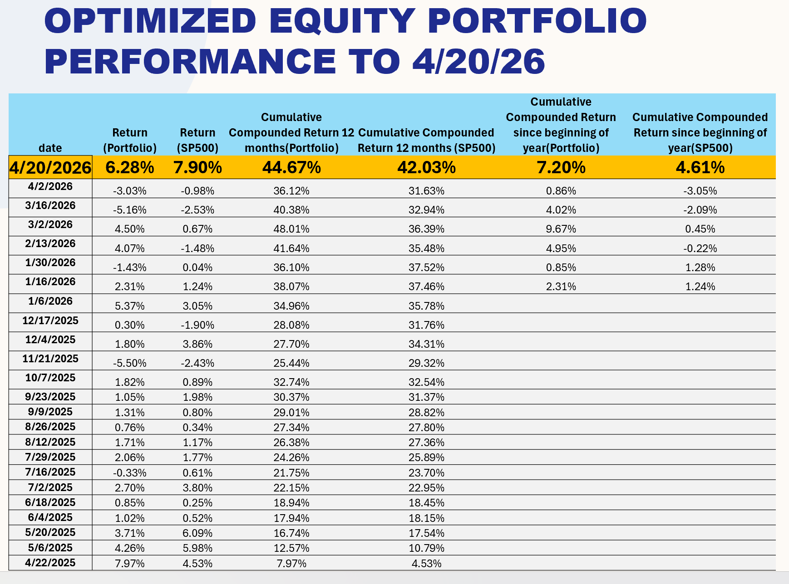

Correia Investment Solutions
AI-Powered Investment Intelligence for the Modern Investor — equipping you with the tools, knowledge, and confidence to take control of your financial future
richcorreia.cfa@correiainvestmentsolutions.com
AI-Powered Investment Intelligence for the Modern Investor — equipping you with the tools, knowledge, and confidence to take control of your financial future
richcorreia.cfa@correiainvestmentsolutions.comThis site is built for individuals who want to learn and understand what they need to do to meet their financial goals — whether that is retirement, financial independence, or any other meaningful milestone. We aim to provide clarity on what to invest in and how to think about building wealth systematically over time.
The choice of brokerage platform is entirely up to you — there are many excellent options available including Schwab, Fidelity, Morgan Stanley, Interactive Brokers, and others, each with their own strengths depending on your needs. What matters more than the platform is understanding the two fundamental types of investment accounts available to you. Taxable accounts are standard brokerage accounts where you can invest freely in securities, but gains are subject to taxation in the year they are realized. Deferred tax accounts — such as traditional IRAs, 401(k)s, and other qualified retirement accounts — allow you to contribute pre-tax dollars, grow your investments without annual taxation on gains, and only pay taxes when you withdraw funds in retirement. Understanding how to use both account types strategically is one of the most powerful tools available to any investor.
This site provides two core resources to help you on that journey. First, the financial planning tool available at the bottom of this page allows you to evaluate where you stand today relative to your future financial goals, model different scenarios, and understand what changes you can make to improve your trajectory. Second, the site provides two distinct investment strategies built around carefully selected securities — a tactical rotation strategy that refreshes every two to four weeks to adapt to short-term market dynamics, and a longer-term fundamental strategy that rotates every three to five months based on deep quantitative analysis of company fundamentals. Together, these tools and strategies are designed to help you invest more efficiently, with better performance, and with greater confidence in reaching your financial goals.
Expand your financial knowledge with our YouTube channel — featuring in-depth videos on investing strategies, financial analysis, and market insights to help you make more informed investment decisions.
Visit Our YouTube Channel →Ask detailed financial questions using structured prompts powered by AI. Enter your question below and generate a professional-grade prompt you can use in ChatGPT.
The results displayed below are generated by a proprietary AI model built on the principles of fundamental analysis, trained and evaluated on quarterly financial data from S&P 500 companies. The model incorporates a comprehensive set of financial variables including net income, sales and revenue, gross and net margins, return on assets (ROA), return on equity (ROE), capital expenditures, and research and development investments — along with the three-year rate of change for each of these metrics to capture meaningful trends over time. Valuation multiples such as price-to-earnings (PE) and price-to-sales (PS) ratios are also factored in, alongside industry-level rankings and cross-industry comparisons to contextualize each company's relative financial standing. In addition to these fundamental inputs, the model employs a Cash Flow to Equity (FCFE) valuation framework combined with Monte Carlo simulations to generate probabilistic estimates of future price levels, accounting for uncertainty across a range of possible outcomes. Two forward-looking price targets are produced for each security: Horizon 1 (H1), which looks approximately 3 months ahead, and Horizon 2 (H2), which extends to roughly 6 months — both measured from an entry point that falls approximately 2 months after the official close of each quarterly reporting period. The charts below visualize how closely the model's predictions aligned with actual realized prices in historical periods, and include a confidence band representing one standard deviation around the predicted values to illustrate the range of expected outcomes. For the most recent quarters, the charts also project what the model anticipates for future price levels, offering a forward-looking perspective grounded in rigorous quantitative analysis.
The securities listed below represent our current selections derived from the AI-driven fundamental analysis model. These picks have been evaluated across all key financial metrics and are intended to be held throughout the second quarter. Each selection reflects a high-conviction opportunity identified through the model's rigorous quantitative screening process.
Calculate the number of shares to purchase for each Q2 fundamental pick based on an optimized distribution of your equity allocation.
The portfolios displayed below are constructed using a sophisticated combination of technical indicators and macroeconomic variables, layered on top of a purpose-built AI model designed to optimize portfolio performance over a rolling two-to-four week forward horizon. The strategy draws from a broad set of macroeconomic signals — including interest rates, inflation trends, economic growth indicators, and sector rotation dynamics — alongside technical signals such as momentum, moving averages, and volatility measures, to identify the most favorable asset allocations at any given point in time. While the core universe of securities analyzed consists of S&P 500 companies, making the S&P 500 index the natural performance benchmark, the portfolio also extends its reach into other asset classes including commodities and international equity regions, with the objective of reducing overall portfolio volatility while simultaneously enhancing returns through broader diversification. The overarching performance goal is to deliver returns that are at least 2x those of the S&P 500 on a risk-adjusted basis, by capitalizing on short-to-medium term mispricings and momentum opportunities that traditional passive strategies are unable to exploit. To achieve this, portfolio allocations are actively reviewed and rebalanced on a monthly basis, ensuring that the weightings remain aligned with the latest signals produced by the AI model and reflect any meaningful shifts in the underlying macroeconomic or technical landscape. This disciplined, data-driven approach to portfolio construction seeks to deliver consistent outperformance while maintaining a clear and transparent framework that investors can follow and understand.
Returns — March 11, 2026

The securities listed below represent our current tactical rotation portfolio — a higher-frequency strategy that refreshes every two to four weeks to adapt to shifting market dynamics, sector momentum, and macroeconomic signals. Unlike the fundamental picks which are held through the quarter, these selections are actively managed to capture short-to-medium term opportunities across equities, commodities, and sector ETFs. Greater portfolio turnover is an intentional feature of this strategy, allowing it to respond more rapidly to changing conditions and reduce exposure to deteriorating trends while rotating into emerging ones.
Calculate the number of shares to purchase for each tactical rotation pick based on an optimized distribution of your equity allocation. This portfolio refreshes every 2 to 4 weeks.
The spreadsheet available for download below is a comprehensive financial planning tool designed to take you from simple to complex financial analysis — giving you a clear picture of where you stand today and what the future may hold based on the specific actions and decisions you make along the way. Built with flexibility at its core, the tool allows you to construct multiple financial scenarios and evaluate how different choices — such as changes in savings rate, continuing to work in a semi or quasi-retired capacity, investment returns, retirement age, or spending habits — can dramatically alter your long-term financial outcomes. Whether you are just starting to plan for retirement or are already in the later stages of your career, the model adapts to your situation and projects forward with precision. It places particular emphasis on the outer years of retirement, where the compounding effects of early decisions become most apparent and where financial security matters most. Beyond the built-in simulations described below, the spreadsheet is fully adjustable and can be tailored to model virtually any financial scenario you can imagine — the inputs, assumptions, and structure are designed to be flexible enough to accommodate unique situations, unconventional retirement paths, and any combination of financial variables that reflect your personal circumstances. Simply input your current financial details, define your assumptions, and let the model do the rest — giving you the clarity and confidence to make better financial decisions today for a more secure tomorrow.
The Analysis sheet includes three built-in simulations that run thousands of Monte Carlo iterations against your inputs to stress-test your retirement plan. Each simulation uses a 15% failure threshold — meaning the plan is considered viable when the probability of running out of money falls below that level.
Uses your current savings rate and portfolio to find the earliest age at which your plan is viable. Starting from your target retirement age, the model runs full Monte Carlo iterations and advances the retirement age one year at a time until the failure probability drops below 15%. The result tells you the earliest realistic retirement age and estimates the legacy you are likely to leave behind — both under average conditions and through strategic investment.
Locks in your target retirement age and finds the minimum annual contributions needed to make it work. If your current savings rate already passes the threshold, the simulation confirms your plan is on track. Otherwise it increases both your deferred tax and taxable contributions by 10% per step — up to the IRS annual limit of $26,000 for deferred accounts — and reruns the model until the failure rate falls below 15%. The result shows exactly how much you need to set aside each year to retire on schedule.
Lets you enter a younger target retirement age and immediately tests whether your current savings can support it. If not, it applies the same 10% step-up logic as Simulation 2 to find the savings level that makes the earlier age achievable. The result gives you a clear, actionable savings target paired with projected legacy values — so you can decide whether retiring earlier is worth the increased contribution required.
Builds directly on Simulation 1 by taking your established retirement age and stress-testing it against up to four significant pre-retirement withdrawals — such as purchasing a second home, funding college tuition, or financing any other major life expense. For each withdrawal event, you will be prompted to provide four pieces of information: how many years from today the withdrawal will occur, the duration of the withdrawal in years if it spans more than one year, the dollar amount, and whether the funds will come from your taxable or deferred tax account. The simulation validates that sufficient funds exist in the selected account before proceeding — flagging any case where the balance falls short as a problem that needs to be addressed before the plan can be stress-tested. Each withdrawal is then applied directly to the appropriate rows in the model — row 19 for taxable account withdrawals and row 21 for deferred tax account withdrawals — across the correct time columns based on your current age and the number of years forward each event occurs. Once all withdrawals have been entered and applied, the model runs the same Monte Carlo iterations used in Simulation 1 to determine whether your retirement age remains achievable under the new cash flow constraints, or whether the withdrawals push your viable retirement age later. All original cell values are preserved and restored after the simulation completes, ensuring your base plan remains intact. The output mirrors Simulation 1 — showing your projected retirement age, expected legacy values under average and strategic investment conditions — with the addition of a clear statement indicating whether your retirement age remains unchanged or has been pushed out as a result of the planned withdrawals.
The .xlsm file requires macros to be enabled before
the simulations can run. Follow the steps for your version of Excel:
⚠️ If you are on a managed corporate device, your IT policy may restrict macros. In that case, contact your IT department to whitelist the file or adjust macro security settings.
Select a sheet below to preview its contents directly on this page.
Click a sheet tab above to preview it here.